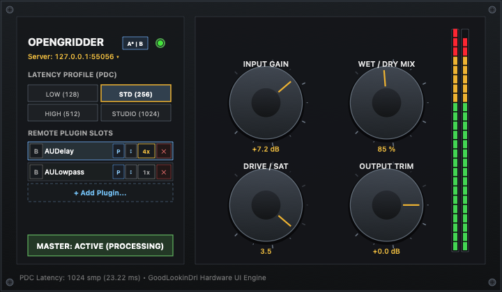
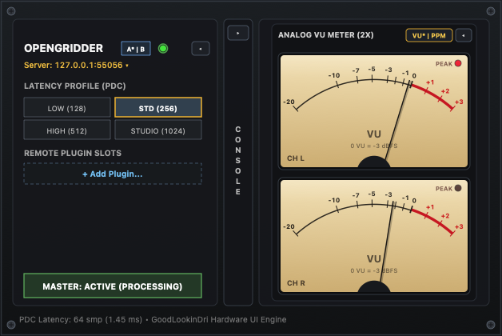
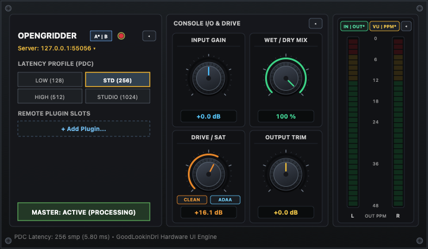
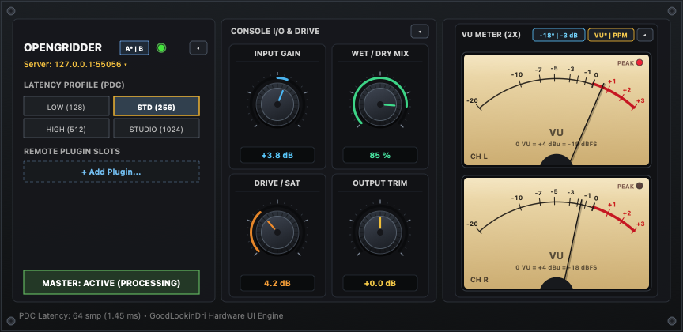
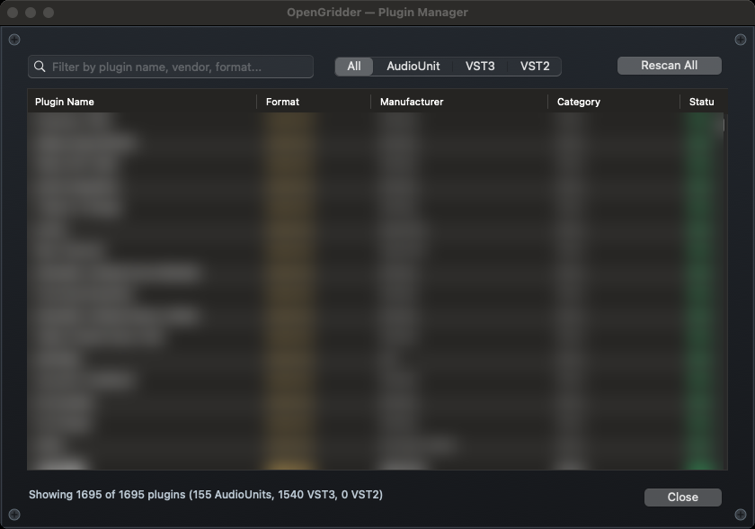

OpenGridder
User Manual · Version 1.0 BETA
OpenGridder lets your DAW use audio plugins that run on a different process, or on a different computer. You insert one OpenGridder plugin on a track. It sends the audio to the OpenGridder Server, which runs your effects and sends the processed audio back. Heavy plugins stop eating your DAW's CPU, and plugins that your DAW can't load directly can still be used.
1. How it works
There are two parts:
- OpenGridder Server is an app that finds your installed plugins and runs them. Each chain runs in its own helper process, so a plugin that crashes does not take down your DAW.
- The OpenGridder plugin sits on a track in your DAW. It sends the track's audio to the server and plays back the result.
The plugin reports its delay to the DAW, so your tracks stay in time. If the server falls behind for a moment, the plugin crossfades to the original audio instead of clicking or going silent.
Supported formats
| Format | Works in |
|---|---|
| AAX Native | Pro Tools |
| VST3 | Cubase, Nuendo, Studio One, Bitwig, REAPER and other VST3 hosts |
| Audio Unit (AU and AUv3) | Logic Pro, GarageBand and other AU hosts |
| VST 2.4, CLAP, LV2 | Hosts that use these formats |
The server hosts Audio Unit and VST3 plugins. A Windows 7 or later server is also available.
2. Installing
- Quit your DAW.
- Open
OpenGridder-1.0.0-beta.1-macos.pkgand follow the installer. - Start the server (next section), then open your DAW.
The installer puts the plugins in the standard folders for each format and the server in your Applications folder. The installer and the disk image are notarized by Apple, so macOS opens them without warnings.
Windows: unzip OpenGridder-1.0.0-beta.1-windows7-x86_64.zip anywhere and keep the two included .dll files next to OpenGridderServer.exe.
3. Starting the server
- Open OpenGridder Server from your Applications folder.
- A splash window scans your plugins. The first scan takes a while with a big library. Later launches only look at plugins that changed. Press Skip Scan if you want to start at once.
- The OpenGridder icon appears in the menu bar. Use it to see status, open the log, open the Plugin Manager, or quit.
4. Using OpenGridder in your DAW
- Make sure the server is running.
- Insert OpenGridder on an audio track, or on an aux or master track.
- The window shows a green light and the server address when the connection is good.
- Click + Add Plugin… and choose an effect.
In Pro Tools, OpenGridder appears under the plugin category for AAX effects. In Logic Pro, look for it in the Audio Units menu.
5. The plugin window

| Control | What it does |
|---|---|
| Status light | Green means connected to the server. Red means the server can't be reached. |
| A | B | Two settings memories. Click to switch between them and compare. |
| Server address | Shows which server you are connected to. |
| Latency profile | Low, Std, High or Studio. See Latency profiles. |
| Remote plugin slots | Your chain of plugins, top to bottom. |
| Input Gain | Level into the chain. |
| Wet / Dry Mix | Blend between processed and original audio. 100% is fully processed. |
| Drive / Sat | Adds saturation. See Drive and oversampling. |
| Output Trim | Level out of the chain. |
| Master | Switches all processing on or off. |
| Footer | Shows the delay your DAW is compensating, in samples and milliseconds. |
Drag a knob up or down to change it. Double-click a knob to reset it to its default.
Folding sections away
The three panels (plugins, console, meters) can fold down to narrow strips when you want a smaller window. Click the small arrow in the panel's corner.

6. Adding and managing plugins
- Add: click + Add Plugin… and pick from the list. You can search by name or maker.
- Order: plugins run from top to bottom. Use the ↕ button on a slot to move it.
- Bypass: click B on a slot to bypass only that plugin.
- Presets: click P to see the plugin's own presets and switch between them.
- Oversampling: click 1x / 2x / 4x on a slot to change how much that plugin is oversampled.
- Remove: click the × on a slot.
Your whole chain, and every plugin's settings, is saved with your DAW project.
7. Opening a plugin's own window
Double-click a slot to open that plugin's editor. You see and use the plugin's real window, whether the server is on the same Mac or on another computer.
- Server on the same Mac: the plugin's real window opens in front of your DAW. Close it with its close button.
- Server on another computer: the server opens the plugin's real window out of sight and sends you a live picture of it, about 10 to 30 pictures a second depending on the plugin. Your mouse clicks, drags, scrolling and key presses are sent back and applied to the plugin. Nothing appears on the server computer's screen, and its own mouse and keyboard are never touched.
Plugins that have no window of their own show a panel of their parameters instead. This works with Audio Unit and VST3 plugins on a macOS server.
Plugins that use copy protection, such as those that need an iLok, load as normal.
8. Latency profiles
Sending audio out and back takes time, and the server needs some spare time when a plugin is busy. A latency profile sets how much safety buffer you want. More buffer means fewer dropouts and more delay.
| Profile | Buffer | Use it for |
|---|---|---|
| Low | 128 samples | Tracking and playing live, light plugins, server on the same Mac |
| Std | 256 samples | General use, the default |
| High | 512 samples | Mixing with heavy plugins, or a second computer on your network |
| Studio | 1024 samples | Mixing, the heaviest plugins, and busy networks |
The buffer is added on top of your DAW's own buffer size. With a 1024-sample DAW buffer, High and Studio give noticeably more headroom than Low and Std. Your DAW is told the new delay and lines up your tracks automatically. The footer shows the total.
9. Drive and oversampling
The Drive / Sat knob adds saturation to the signal after your chain. Three character modes are available on the console:
| Mode | Sound |
|---|---|
| Clean | Even and symmetrical, adds odd harmonics |
| Tube | Warmer, adds even harmonics |
| Transformer | Heavier low end, as if an iron core is being pushed |

Oversampling
Saturation and some plugins can create harsh, aliased tones. Oversampling runs the plugin at twice or four times the sample rate to avoid them.
- 1x: off. Lowest CPU use and delay.
- 2x: a good balance.
- 4x: the cleanest, with the most CPU use.
The oversampling filter keeps the top end intact, with a flat response to about 19.5 kHz at 44.1 kHz. It adds a few dozen samples of delay, which your DAW compensates. Heavy plugins use a lot more CPU at 2x and 4x, so only turn it up where you need it.
10. Meters
The meter panel has two modes. Click the VU | PPM button to switch.

- VU: traditional needle meters. A button picks the reference level: -18 (0 VU equals -18 dBFS, +4 dBu) or -3 (0 VU equals -3 dBFS).
- PPM: stacked peak bars that show peaks quickly.
- IN | OUT: choose whether the meters show the level going in or coming out.
The peak light turns red when the signal goes over the top of the scale.
11. Bouncing and offline rendering
OpenGridder detects when your DAW is bouncing or rendering faster than real time. It then waits for the server to return each block, so the bounce contains the fully processed audio. This applies to Pro Tools bounces and to offline renders in hosts that report offline mode.
12. Plugin Manager
Open the Plugin Manager from the server's menu bar icon, or press ⌘P.

- Use the tabs to show all plugins, or only Audio Unit, VST3 or VST2 ones.
- Type in the search box to filter by name, maker or format.
- The Status column shows whether a plugin is available.
- Rescan All (⌘R) clears the cache and looks for plugins again. Do this after you install a new plugin.
13. Using a second computer
You can run the server on another computer on your network, for example a fast Mac next to your studio computer.
- On the server computer, start the server so it accepts network connections:
"/Applications/OpenGridder Server.app/Contents/MacOS/OpenGridderServer" --bind 0.0.0.0 --port 55056 - On your DAW computer, open
~/Library/Application Support/OpenGridder/client.jsonand set the server address:{"server":"192.168.1.20:55056","transport_samples":256} - Reload OpenGridder in your DAW. The window shows the new address.
By default the server only listens on the same computer (127.0.0.1:55056).
14. Pro Tools control surfaces
OpenGridder includes page tables for supported Avid and Digidesign surfaces.
| Surface | Mapping |
|---|---|
| Control|24 and C|24 | Strips 1–7: Master Bypass, Remote Plugin, Latency Profile, Input Gain, Wet/Dry Mix, Drive, Output Trim |
| D-Control and D-Command | Eight-encoder channel strip |
| ProControl | Sixteen faders |
| HUI, Command|8, Digi 002 and 003 | Eight encoders |
15. Troubleshooting
| Problem | What to try |
|---|---|
| The light is red | Start OpenGridder Server. If the server is on another computer, check the address in client.json and your network. |
| Crackles or dropouts | Choose a higher latency profile. Raise your DAW's buffer size. Turn oversampling down or off on heavy plugins. Close other heavy apps. |
| High frequencies sound dull | Check each slot's oversampling. At 1x there is no filtering. If it still sounds dull, check the plugin itself with a bypass test. |
| A bounce is not processed | Make sure the server is running before the bounce starts. Check that the slot isn't bypassed. |
| A plugin is missing from the list | Open the Plugin Manager and press Rescan All. Make sure the plugin is installed for all users. |
| A plugin's window doesn't show in front | This applies when the server is on the same Mac. Allow Accessibility access for OpenGridder Server in System Settings → Privacy & Security. |
| The remote plugin window is slow or blank | Wait a second after opening it. If it stays blank, close and reopen it. Heavy editors can be slow; a wired network helps. Tell us the plugin name if it never shows its real window. |
| The server is disconnected after loading a plugin | Update to the latest build and restart the server. If it repeats with one plugin, tell us the plugin name and which profile you used. |
| Delay between tracks | Some hosts only re-check plugin delay on playback. Stop and start playback, or reload the session. |
The server log is available from the menu bar icon. Include it when you report a problem.
16. Notices
OpenGridder 1.0 BETA is proprietary software. See the LICENSE file. Pro Tools, AAX, Control|24 and C|24 are trademarks of Avid Technology, Inc. VST is a trademark of Steinberg Media Technologies GmbH. Audio Units is a trademark of Apple Inc. All other names belong to their owners.